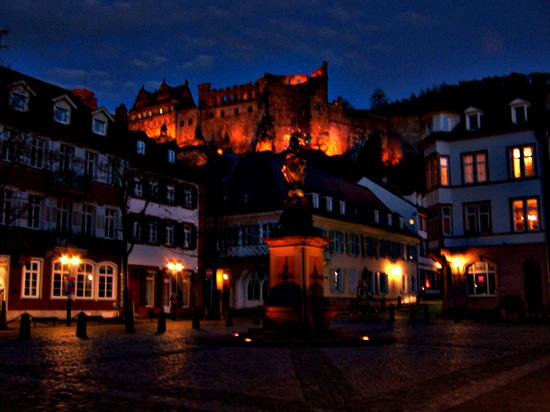
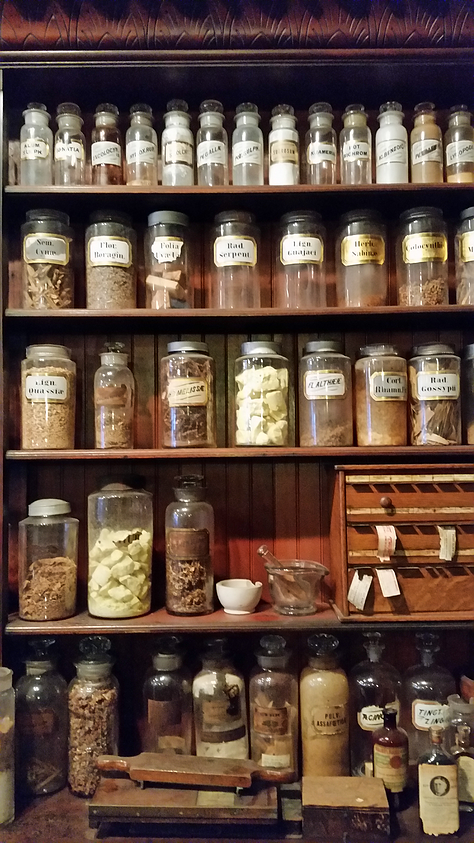

The Heidelberg Castle in Heidelberg Germany is a large 16th century Castle. It is made
from red sandstone and is positioned on a hillside. The Castle has a guided tour
of the place, and a big wine barrel
The Pharmacy Museum is very close to the Heidelberg Castle. The Museum has many exhibits
from over 2000 years of medical advancements and progress. The Pharmacy Museum tries to
make a great interactive experience. Small souvenir shop is present, but entrance is free.
